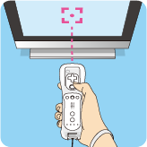

7 |
Using the Controller |
 |
Hold the Wii Remote controller sideways when playing Dr. Mario. Note: In Dr. Mario, you can use the Nunchuk™ controller, the Classic Controller™, or a Nintendo GameCube™ controller to play. The controller used to select the game in the menu screen will become Player 1. This manual concerns play with the Wii Remote controller, although basic commands for the other controllers are listed below. For more details on alternate controllers, please refer to the icons displayed in the game.
Hold the Wii Remote controller upright when playing Virus Buster. 
● Pointing |
 |
 |
 |